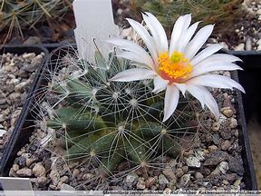

Plantas endemicas
Plantas
Mammillaria zephyranthoides

(Biznaga de flor occidental)
Un cactus subgloboso con flores infundibuliformes de color verde con margen blanco. Se distribuye en la región centro y sur de México, especialmente en el Valle de Tehuacán-Cuicatlán
Ir al menu